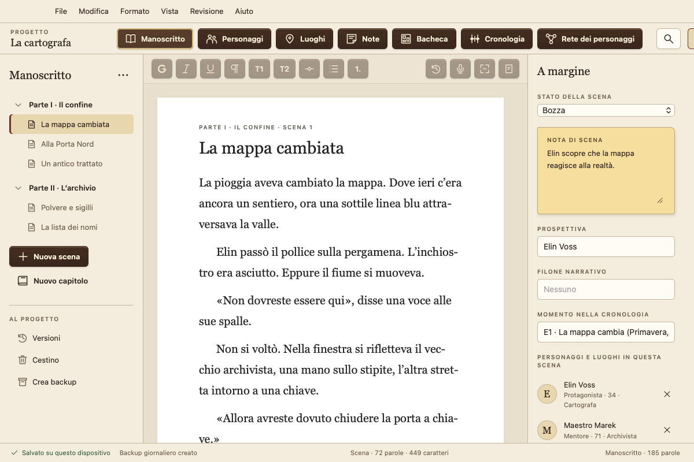
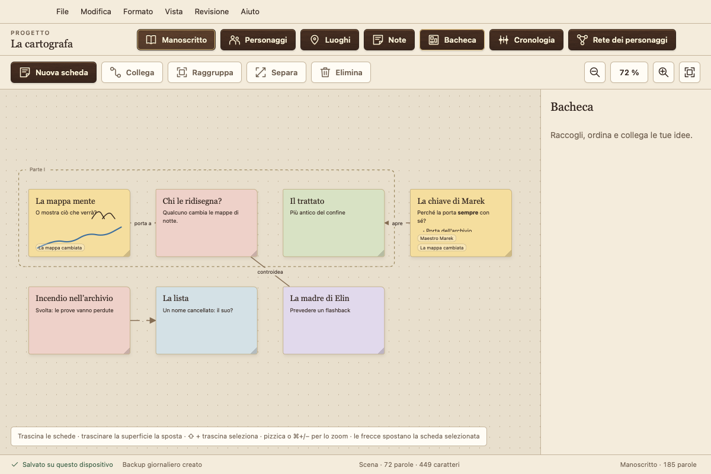
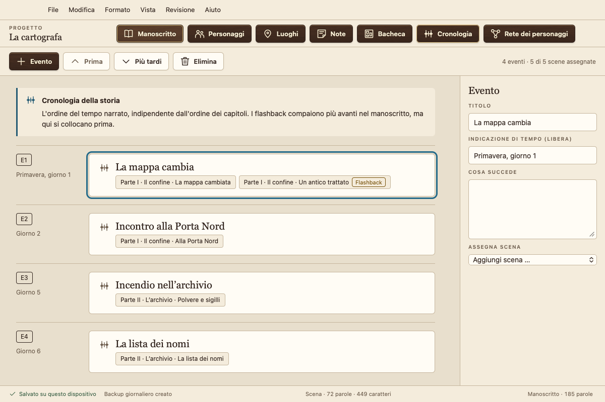
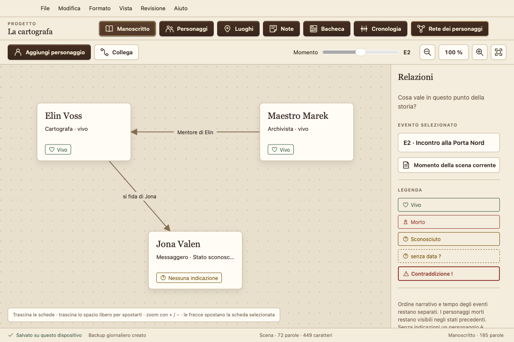
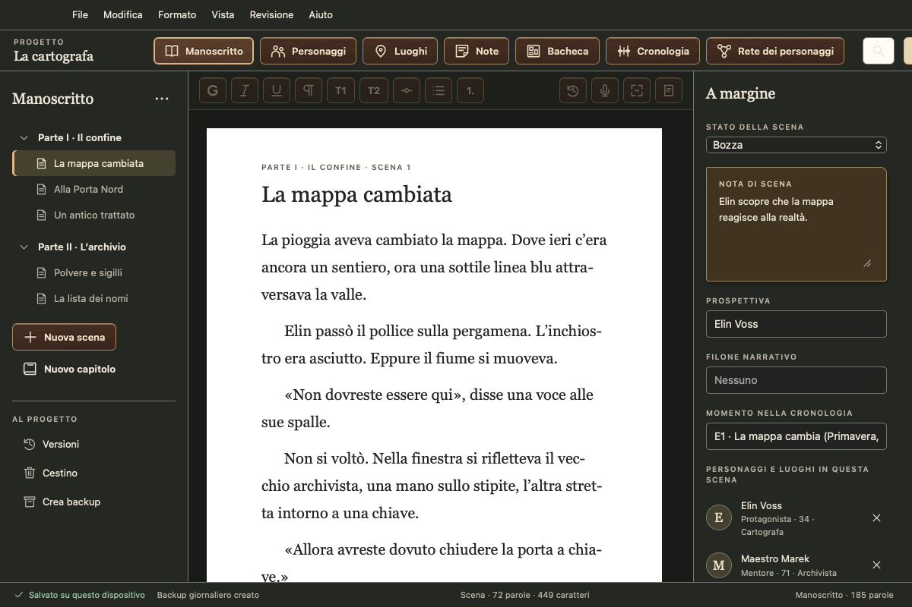

L'app di scrittura gratuita per romanzieri
Il suo manoscritto resta con lei: niente abbonamento, niente account, nessuna raccolta di dati, nessun addestramento di IA. Per Mac, Windows, Linux e Android.
Versione 0.1.7 · prima fase di test · 6 lingue · download

Tutto per il suo libro in un unico posto
Capitoli e scene
Scriva per scene, le riordini trascinandole e tenga tutto sotto controllo con stato, prospettiva e note di scena.
Personaggi e luoghi
Profili dei personaggi con campi personalizzati. Atramentum riconosce chi compare in una scena.
Bacheca
Schede con testo, elenchi e schizzi, in gruppi e con collegamenti, legate a scene e personaggi.
Cronologia
Gli eventi nel tempo della storia. Atramentum individua i flashback quando l'ordine del libro si discosta dalla cronologia.
Rete dei personaggi
Relazioni e stati dei personaggi in qualsiasi momento della storia. Chi è ancora vivo nel capitolo 12?
Cartella editoriale, Word ed e-book
Esportazione in PDF come cartella editoriale o copia di lettura, in Word, e-book (EPUB, anche per Kindle tramite KDP), Markdown o testo semplice, a scelta con frontespizio, dedica, colophon e formato di pagina proprio. Importazione da Word, Scrivener, Markdown e testo semplice.
Revisione
Analisi dello stile con leggibilità, frasi lunghe, ripetizioni e riempitivi. Controllo di ortografia e grammatica dell'intero manoscritto con il correttore del sistema. Confronto tra versioni e lettura ad alta voce del testo.
Panoramica
Scaletta come tabella o schede delle scene, etichette colorate e parole chiave. Aprire un'altra scena o una scheda personaggio accanto al testo.
Atramentum in azione




Le sue parole appartengono a lei
In locale e offline
Atramentum salva tutto sul suo dispositivo e funziona senza Internet. Non invia mai a nessuno i suoi testi né i suoi dati personali.
Non si perde nulla
Ogni modifica viene salvata subito. In più ci sono le versioni di ogni scena, un cestino, backup giornalieri e uno strumento di recupero.
Su tutti i suoi dispositivi
Sincronizzazione tramite una cartella del suo servizio cloud (iCloud Drive, Dropbox, OneDrive …), senza alcun account presso di noi.
Download
| Sistema | Download | Guida |
|---|---|---|
| Mac macOS 13+, Apple silicon e Intel | .dmg | Installare su Mac |
| Windows 10 e 11, 64 bit | Setup (.exe) | Installare su Windows |
| Linux Ubuntu, Debian, Mint | .deb | Installare su Linux |
| Linux tutte le altre distribuzioni | AppImage | Installare su Linux |
| Android 7 e successivi, smartphone e tablet | .apk | Installare su Android |
Atramentum non è autenticato da Apple né firmato con un certificato Microsoft. I certificati costano ogni anno e Atramentum è gratuito. Per questo macOS e Windows chiedono una conferma prima del primo avvio; le guide spiegano come aprirlo comunque. iPhone e iPad arriveranno tramite l'App Store.
Prima fase di test: faccia backup regolari e mi segnali tutto ciò che nota. Checksum e strumenti di recupero si trovano nella pagina della release.